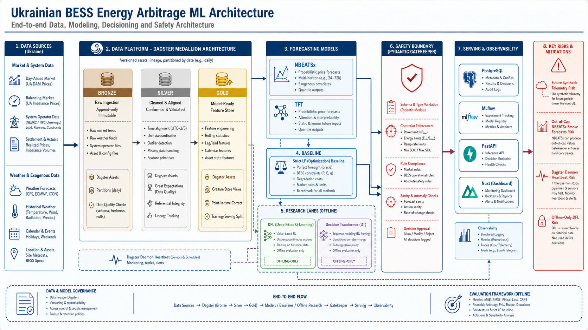

Direction is sound
The project is a coherent thesis-grade predict-then-optimize evidence platform for Ukrainian BESS arbitrage.
DagsterLP baselineread modelsA renewed strategic review of the Dagster ML architecture, Docker runtime, data loaders, forecast and bidding strategy evidence, scientific grounding, and thesis-safe roadmap.
The project is a coherent thesis-grade predict-then-optimize evidence platform for Ukrainian BESS arbitrage.
DagsterLP baselineread modelsDFL and Decision Transformer lanes are offline research evidence, not deployed market execution.
offline DFLDT previewmarket execution falseFuture synthetic telemetry and out-of-cap official NBEATSx rows are the two most important integrity issues.
future timestampsforecast caps
API health is OK, Postgres is healthy, Dagster definitions load, and Docker Compose config validates.
Dagster daemon logs repeated heartbeat shutdown warnings. This should be investigated before relying on schedules in a demo loop.
OREE DAM, Open-Meteo, MQTT telemetry, grid events.
Raw source capture with observed/synthetic provenance.
Feature frames, battery state, forecast context.
LP regret, forecast candidates, offline DFL/DT evidence.
Pydantic contracts and deterministic safety boundary.
Postgres, MLflow, FastAPI, Nuxt dashboard.
| Data source | Evidence | Status | Action |
|---|---|---|---|
| OREE DAM | 3,061 observed rows; 0 cap violations | usable | Keep cap/provenance checks. |
| Open-Meteo | Observed rows exist, but tenant coverage differs | partial | Add latest-common-panel gate. |
| Battery telemetry | All synthetic; future raw timestamps to 2026-11-21 | unsafe for live SOC claims | Filter future rows and label accelerated simulation. |
| Grid events | 15 observed rows; no future rows | context only | Use as AFE context, not causal proof. |
strict similar-day + LP is still the current fallback and best control comparator.
TFT is cleaner in current persisted rows; official NBEATSx is blocked due to out-of-cap outputs.
Schedule/Value Learner V2 has offline read-model promotion; DT is preview-only; full DFL is blocked.
| Risk | Severity | Why it matters |
|---|---|---|
| Future synthetic telemetry | High | Can contaminate operator SOC and live-demo language. |
| Out-of-cap official NBEATSx | High | Invalid forecast rows must not be treated as value-ready predictions. |
| Dagster daemon heartbeat | High | Definitions load, but schedule reliability needs investigation. |
| Uneven weather panel | Medium | All-tenant comparisons need common availability windows. |
| Forecast-store key | Medium | Potential conflict if multiple models share run/timestamp. |
NEURC Resolution No. 621, OREE 2026 tariff, EU electricity market design, Ukraine NECP, and EU AI Act.
Predict-then-bid DFL, decision-focused ESS arbitrage, NBEATSx, TFT, cvxpylayers, and degradation-aware BESS optimization.